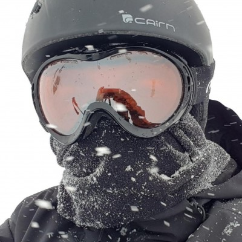

<div class="top-bar-content">
    <a class="top-bar-home" href="/index.html">
        
        <h2>Nicolas Vandeginste</h2>
    </a>
    <div class="socials">
        <a href="https://github.com/Kuinox"></a>
        <a href="https://www.linkedin.com/in/nvandeginste/"></a>
        <a href="https://gitlab.com/Kuinox">  </a>
        <a href="https://twitter.com/Kuinox_"> </a>
    </div>
    <div class="top-bar-links">
        <a href="/index.html">Accueil</a>
        <a href="/competences.html">Compétences</a>
        <a href="/realisations.html">Réalisations</a>
    </div>
</div>